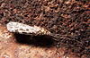

trichoptera

Has synonym(s): caddisfly
Definition: The caddisflies, or order Trichoptera, are a group of insects with aquatic larvae and terrestrial adults. There are approximately 14,500 described species, most of which can be divided into the suborders Integripalpia and Annulipalpia on the basis of the adult mouthparts. Integripalpian larvae construct a portable casing to protect themselves as they move around looking for food, while Annulipalpian larvae make themselves a fixed retreat in which they remain, waiting for food to come to them. The affinities of the small third suborder Spicipalpia are unclear, and molecular analysis suggests it may not be monophyletic. Also called sedge-flies or rail-flies, the adults are small moth-like insects with two pairs of hairy membranous wings. They are closely related to the Lepidoptera (moths and butterflies) which have scales on their wings; the two orders together form the superorder Amphiesmenoptera.
Source: Wikipedia
Wikipedia Page (Something wrong with this association? Let us know.)
Wikidata Page (Something wrong with this association? Let us know.)